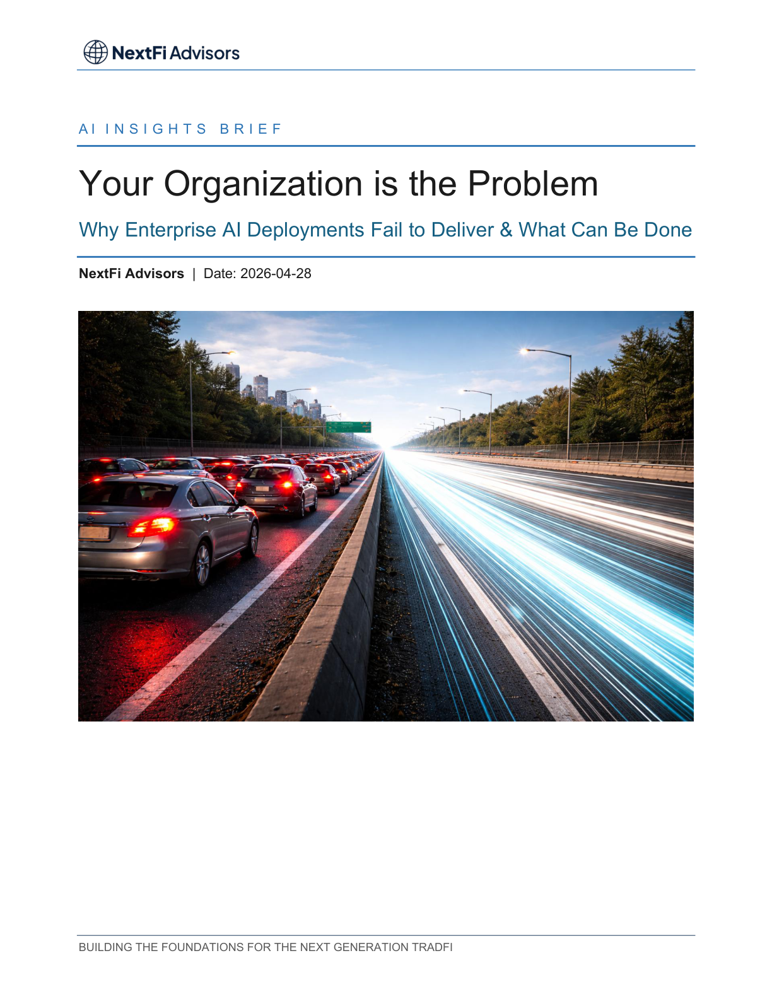

AI Insights Brief
Lessons For Enterprise AI Deployments

Executive summary
- Model quality matters, but deployment outcomes are mainly determined by organizational readiness.
- Firms that redesign workflows early unlock value faster than those layering AI onto legacy processes.
- Leadership sponsorship must include accountability for business adoption, not only experimentation.
- Change friction in legal, risk, and operations can stall progress unless addressed in program design.
- Teams that institutionalize feedback loops outperform one-time pilot programs.
The deployment gap is organizational, not technical
Many institutions can demonstrate pilot performance, yet far fewer convert pilots into scaled value. The common failure mode is treating AI as a tooling project rather than a cross-functional redesign of work, controls, and accountability.
Where value creation compounds
Value accelerates when organizations map end-to-end processes and target high-friction decision moments first. In these environments, AI assists expert teams with better context, faster cycle times, and tighter exception handling.
Operating disciplines that separate leaders from laggards
Winning organizations define ownership at the business-line level, align incentives to adoption outcomes, and establish recurring review cadences that link model behavior to commercial and risk metrics.